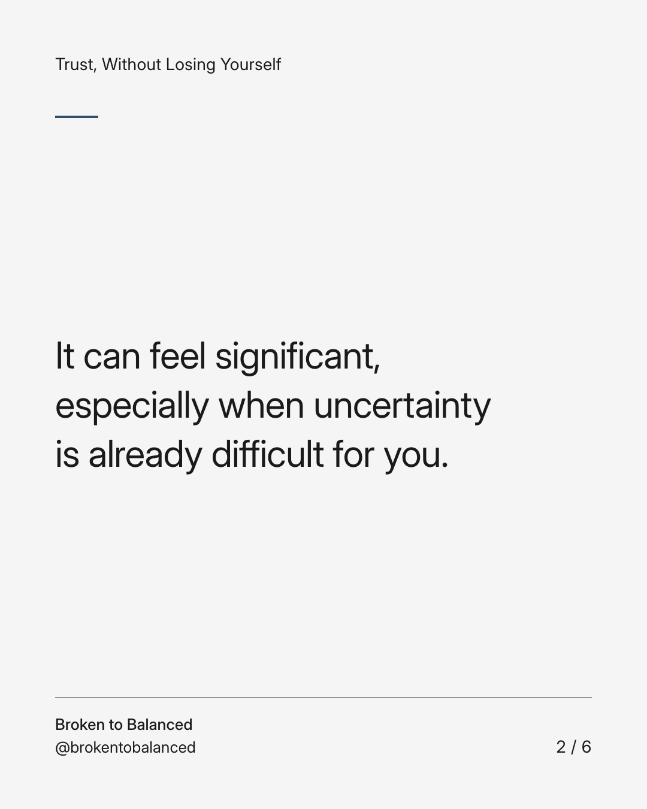
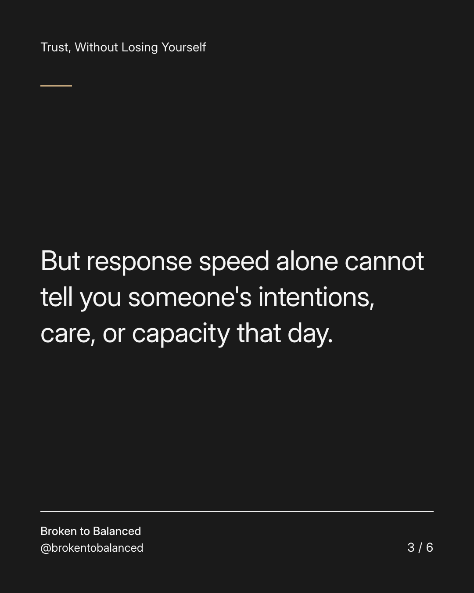
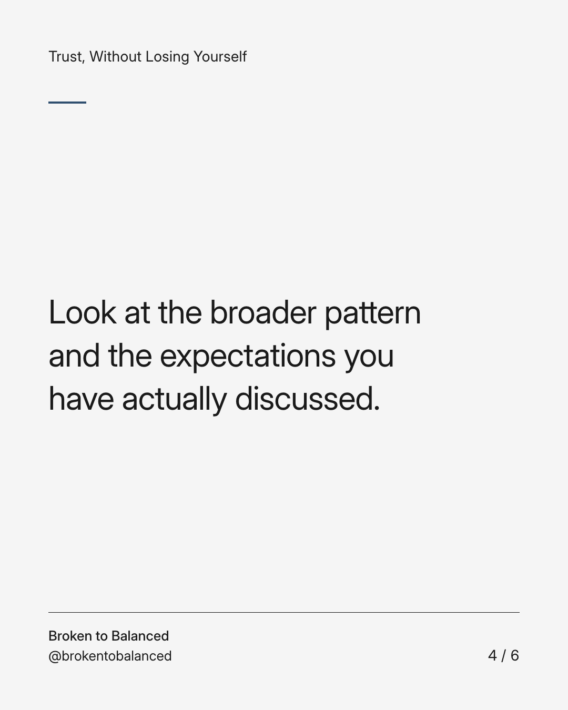
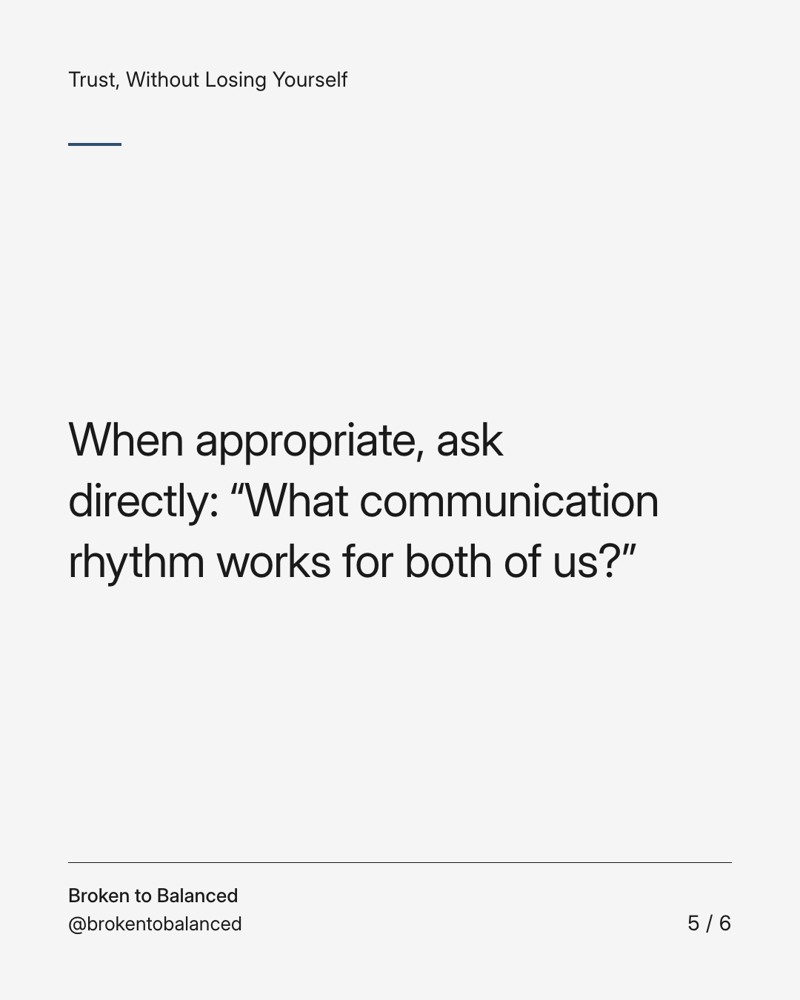
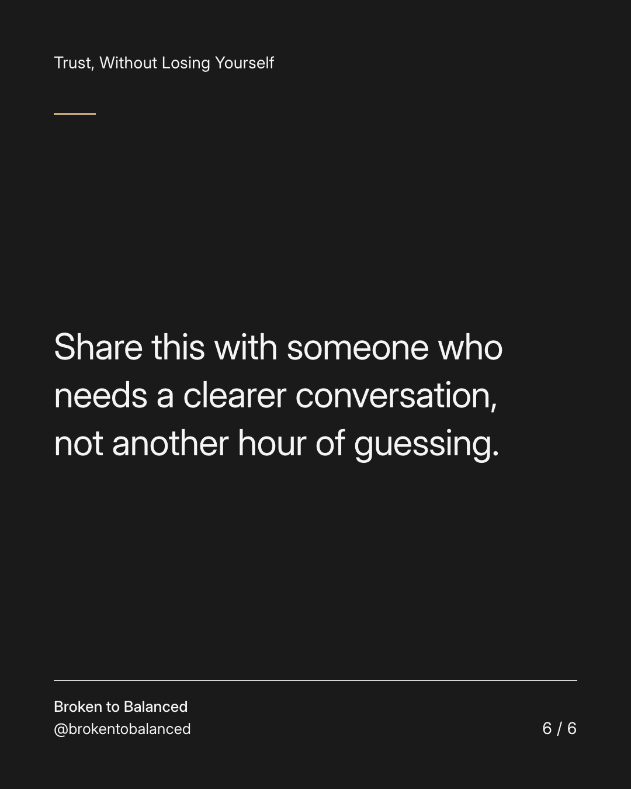

Exact text and accessibility text
One delayed reply is not the whole relationship.
Slide 1 of 6. One delayed reply is not the whole relationship.


Exact text and accessibility text
It can feel significant, especially when uncertainty is already difficult for you.
Slide 2 of 6. It can feel significant, especially when uncertainty is already difficult for you.


Exact text and accessibility text
But response speed alone cannot tell you someone's intentions, care, or capacity that day.
Slide 3 of 6. But response speed alone cannot tell you someone's intentions, care, or capacity that day.


Exact text and accessibility text
Look at the broader pattern and the expectations you have actually discussed.
Slide 4 of 6. Look at the broader pattern and the expectations you have actually discussed.


Exact text and accessibility text
When appropriate, ask directly: “What communication rhythm works for both of us?”
Slide 5 of 6. When appropriate, ask directly: “What communication rhythm works for both of us?”


Exact text and accessibility text
Share this with someone who needs a clearer conversation, not another hour of guessing.
Slide 6 of 6. Share this with someone who needs a clearer conversation, not another hour of guessing.
Exact caption
Plain-text fallback: select and copy the caption.